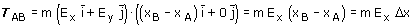
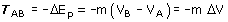
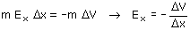
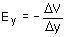

Relación entre campo y potencial Considera dos puntos alineados horizontalmente: A (xA, y), B (xB, y) y tan próximos que se puede suponer que el campo gravitatorio entre ellos es uniforme: E = Ex i +Ey j. Si una masa m va desde A hasta B el campo hará un trabajo:  El trabajo del campo también se puede calcular a partir de la variación de energía potencial:  Igualando las dos expresiones resulta:  Analogamente se podría obtener:  Moraleja La componente del campo en una dirección mide la relación entre el cambio de potencial y el desplazamiento en esa dirección. El signo - indica que dicha componente apunta hacia los potenciales decrecientes. |